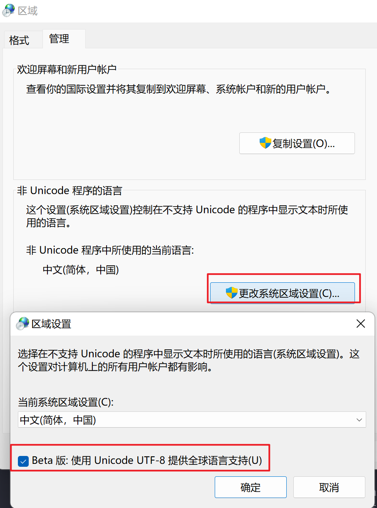
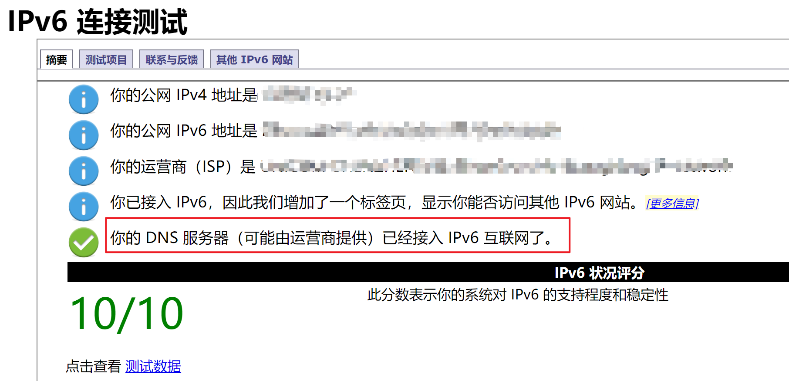
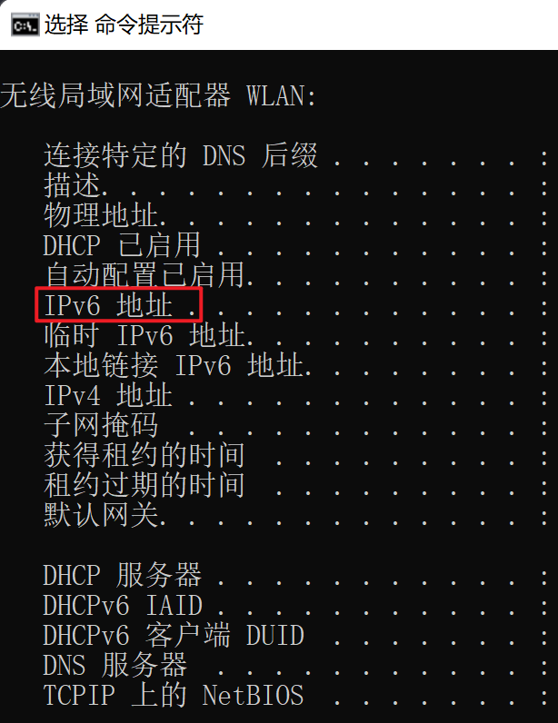
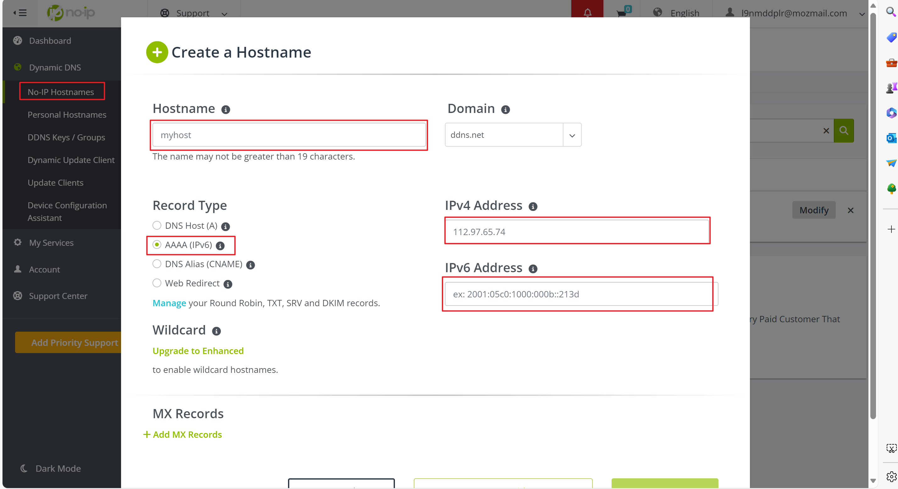
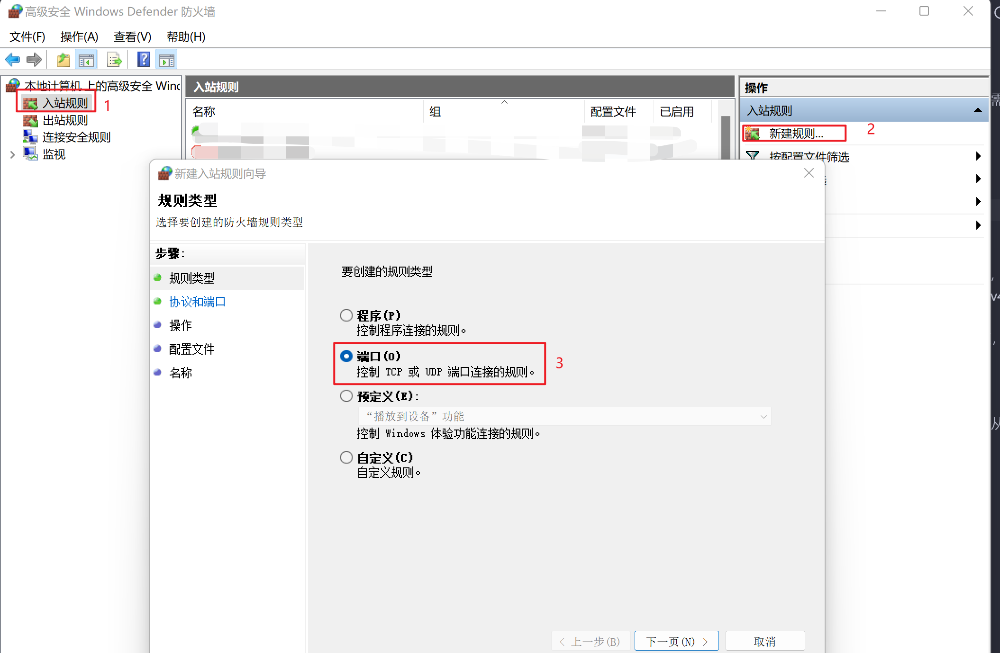
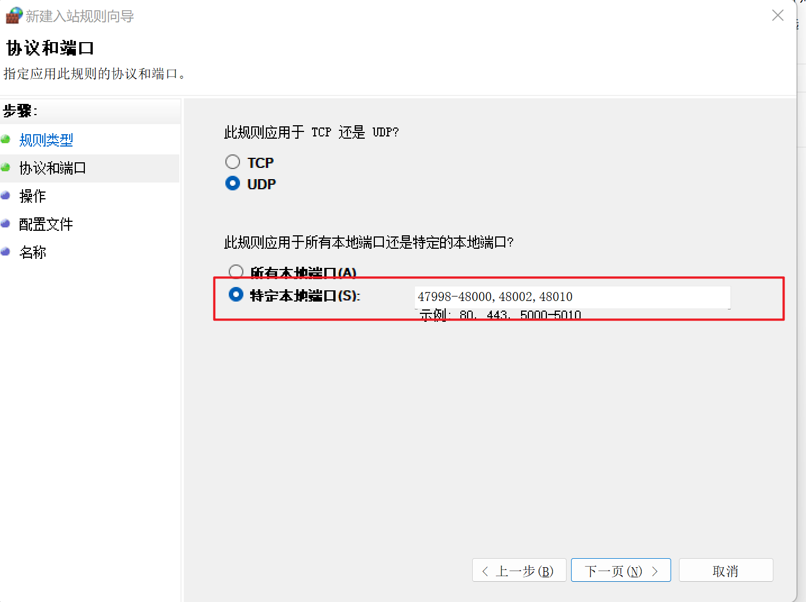

使用sunshine和moonlight实现远程游戏串流

文章目录
过年回家想要打游戏，但是苦于家里没有电脑，又没办法把电脑搬回去，于是想到了使用串流的方式。
实现串流的软件有多种：
- moonlight。因为仅实现了 NVIDIA 的游戏串流协议，所以只支持 N 卡。
- Steam Link。支持 steam 的游戏。
- Sunshine。支持 AMD, Intel, 和 Nvidia 三家的显卡。而且支持使用 Moonlight 作为客户端。开源。
- Parsec。其实是一个远程桌面的商业解决方案，不仅仅能用来打游戏。需要注册账号且闭源。
因为使用的是 A 卡，而且玩的不只是 steam 游戏，经过综合的考虑，选择了 Sunshine 作为串流工具。
Sunshine 的安装
首先需要在官网下载 Sunshine，安装后设置开机启动。
如果启动时命令行窗口提示
Terminate called after throwing an instance of 'std::range_error'
what(): wstring_convert::from_bytes
则需要通过 Win+S 输入【区域】并进入区域设置，点击【管理】标签页，然后点击【更改系统区域设置】，勾选【Beta 版：使用 Unicode UTF-8 提供全球语言支持】，重启电脑。

ipv6
想要从外网访问主机，有两种方式，一种是公网 ip，一种是内网穿透。
公网的 ipv4 需要向运营商申请，因为 ipv4 稀缺的原因，所以很难申请到。但是 ipv6 可以让全球每台设备都拥有一个可访问的公网地址。
首先访问 IPv6 测试 测试是否支持 ipv6，如果显示 DNS 服务器已经配置 IPv6，说明营运商已经接入 ipv6，这时候只需要找到路由器，打开 ipv6 开关便可。
 现在大多数运营商都已经接入 ipv6，除了个别 (说的就是广电网络)，没有接入的话，需要打电话给运营商开通。
连接上 ipv6 网络后，可以通过访问 ipv6 网站获取可访问的外网 ipv6 地址，也可以通过 ipconfig /all 命令获取。

DDNS
运营商出于安全考虑，并不会给固定的 ipv6 地址，每次拨号后或者电脑重启后，ip 地址都会改变，导致每次都要手动获取当前的 ipv6 地址。一种解决办法是使用 DDNS（动态域名解析），将 ip 地址映射到固定的域名地址，并检测每次 ip 地址的变更，重新进行映射。部分路由器会提供 DDNS 功能，我们需要注册一个路由器支持的 DDNS 提供商的账号。
下面以 no-ip 为例。
先去官网注册一个账号 Free Dynamic DNS No-IP，然后新建一个域名，Record Type 选择 ipv6，再把主机的 ipv4 和 ipv6 地址填上去。 
新建好域名后，把账号信息填到路由器上的 DDNS 功能上，便可使用。
如果路由器不支持 DDNS 咋办？这就需要使用脚本动态监听 ip 地址的更改，并修改映射。
下面是一个使用 python 实现一个定时获取本机 ipv6 地址。然后通过 no-ip 的 api 修改映射的脚本。
import socket
import base64
import os
import re
import time
class netParam:
def __init__(self):
self.host = "xxx"
self.usrname = "xxx"
self.passwd = "xxx"
self.domain = "xxx"
self.timeval = 10 * 60
self.server_port = 80
def getIPv6Address():
host_ipv6=[]
ips=socket.getaddrinfo(socket.gethostname(),80)
for ip in ips:
if ip[4][0].startswith('24'):
# 2408 中国联通
# 2409 中国移动
# 240e 中国电信
return ip[4][0]
def getip(domain):
address = socket.getaddrinfo(domain, 'http')
return address[0][4][0]
if __name__ == "__main__":
param = netParam()
tcp_sock = socket.socket(socket.AF_INET, socket.SOCK_STREAM)
tcp_sock.setsockopt(socket.SOL_SOCKET, socket.SO_REUSEADDR, 1) # 不经过WAIT_TIME，直接关闭
tcp_sock.setblocking(False) # 设置非阻塞编程
tcp_sock.settimeout(1)
link_statu = False
send_data_len = 0
old_ipv6addr = ""
fisrt_flag = True
# 按协议，对usrname:passwd进行base64编码
raw_key = param.usrname + ":" + param.passwd
print("raw key: " + raw_key)
encode_key = base64.b64encode(raw_key.encode("utf-8"))
encode_key = str(encode_key)[2:len(str(encode_key)) - 1]
print("encode key: " + encode_key)
#构造请求头部的内容，由于本机ip可能变化，因此这里没有直接把GET方法写进去，而是放在循环体中做
requestParam = ""
requestParam += "Host: dynupdate.no-ip.com\r\n"
requestParam += "Authorization: Basic " + encode_key + "\r\n"
requestParam += "User-Agent: None\r\n\r\n"
print("request:\n" + requestParam)
while(True):
# 每次运行等待timeval（此处是5分钟）的间隔，避免频繁更新
if (True != fisrt_flag):
time.sleep(param.timeval)
fisrt_flag = False
# 获取ipv6地址，若地址没有发生改变，则不上报更新
ipv6addr = getIPv6Address()
if (0 != len(ipv6addr)):
print("ipv6 addr: " + ipv6addr)
if (ipv6addr == old_ipv6addr):
print("ip not change, continue")
continue
# 构造请求的头部GET方法内容
requestHead = "GET "
requestHead += "/nic/update?hostname=" + param.domain + "&myip=" + ipv6addr + " HTTP/1.1\r\n"
# 建立tcp连接
if (False == link_statu):
server_ip = getip(param.host)
print("server ip is :" + server_ip)
try:
tcp_sock.connect((server_ip, param.server_port))
print("connect server success")
link_statu = True
except Exception as err:
print("connect server failed, exception:", err)
continue
# 发送数据
send_data = requestHead + requestParam
send_data_len = 0
while send_data_len < len(send_data):
time.sleep(0.1)
try:
send_data_len += tcp_sock.send(send_data[send_data_len:].encode())
print("send " + str(send_data_len) + " data")
except Exception as err:
print("send data error, exception: ", err)
print("close tcp socket")
tcp_sock.close()
link_statu = False
break
if (send_data_len != len(send_data)):
continue
print("send data:" + send_data)
# 检查结果，更新成功则把当前ip记录为旧ip
if (True == link_statu):
try:
recv_data = tcp_sock.recv(2048)
print("server reply:\n" + str(recv_data))
except Exception as err:
print("recv data error, exception: ", err)
tcp_sock.close()
link_statu = False
if (-1 != str(recv_data).find("HTTP/1.1 200 OK")):
old_ipv6addr = ipv6addr
print("update ip success")
print("end")
最好将脚本设置开机启动。
防火墙
在成功设置域名访问后，会发现依旧无法访问主机，这是因为路由器和主机上都设置了防火墙，阻止外来网络的恶意访问。所以我们需要关闭路由器的防火墙，设置 window 防火墙开放 moonlight 的端口。端口为：
- TCP: 47984, 47989, 48010
- UDP: 47998-48000, 48002, 48010
开放 window 的防火墙的特定端口，首先 win 键搜索“高级安全 Windows Defender 防火墙”，选择入站规则 ->新建规则 ->端口。

选择 UDP 或 TCP，输入特定端口。

到此，便可从外网访问到内网主机。
内网穿透
但如果控制端和被控制端任何一方不存在 ipv6，则只能使用内网穿透，内网穿透可以使用 zerotier，使用办法也很简单，注册一个账号，然后新建一个网络，得到一个网络 ID，分别下载 window 和安卓端的软件，添加网络 ID，便可以使用。在网络的设置页面能看到给成员分配的 ipv4 地址，可以通过这个 ipv4 地址互相访问。
智能插座与主板来电启动
解决了上述问题后，远程问题是解决了，但是电脑不可能一直开着，这时候可以使用智能插座或者开机棒，如果是小米智能插座，可以直接连 wifi，如果是小米智能插板，则另外需要一个网关。特别需要注意的是，在电脑关机后，一定要多等几分钟确定功率为 0 后再关闭插座，防止电脑突然断电。
然后设置主板的来电启动，这个需要参考不同主板的设置。
显卡欺骗器
还有问题就是，显示器关闭状态下，显卡是不会工作的，这会导致串流时显示黑屏，解决办法是购买一个 HDMI 显卡欺骗器，或者网上下载一个虚拟现实器的软件，从而实现显示器关闭后，显卡也能正常工作。
最后
准备工作做好后，最后便是下载 moonlight手机端，通过域名连上电脑，开开心心打游戏。
建议最好是把向日葵也设置开启启动，防止出现问题时也能远程连接上电脑。
参考：
文章作者 梧桐碎梦
上次更新 2024-02-24 14:40:38